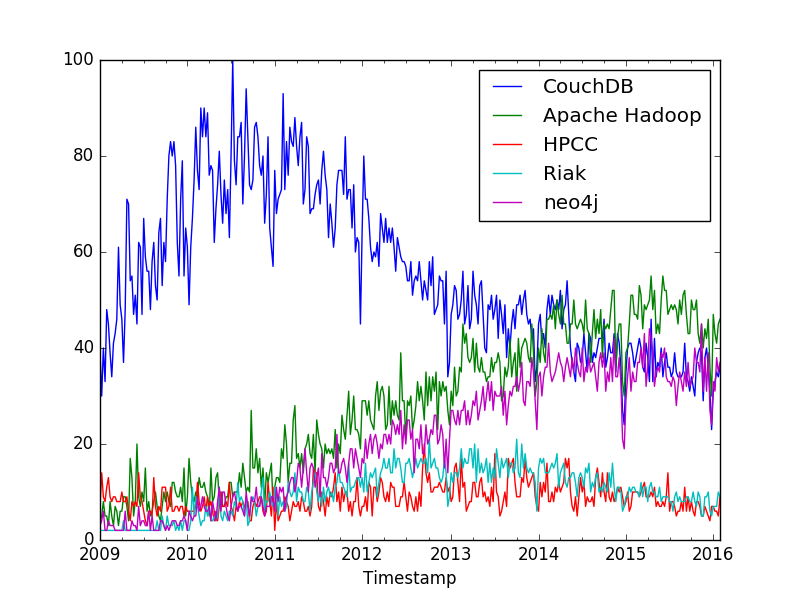

Общая характеристика кластеров
Общее количество
исследуемых объектов:
{{ objects_count }}
.
Список исследуемых объектов:
{% for object in objects_list %}
{{ object }}
{% endfor %}.
Список исследуемых пространств объектов:
{% for space in spaces_names %}
{{ space }}
{% endfor %}.
Объекты были сгруппированы в {{ clusters_count }} кластера(-ов).
Количество объектов изменять можно, количество кластеров изменять нельзя.
Большинство объектов исследования сгруппированы в кластерах: {{ most_popular_cluster }}.
Наименьшее количество объектов исследования сгруппированы в кластерах: {{ least_popular_cluster }}.
Исходные данные по объектам в графическом виде
Нечеткая шкала лингвистического резюмирования
Описание (лингвистическая оценка, фактор изменения, комментарий):
- High fall (0 - 0.5) - падение более чем на 50%
- Fall (0.5 - 0.99) - падение не более 50%
- Flat (1 - 2) - рост не более чем в 2 раза
- Growth (2 - 10) - рост от 2 до 10 раз
- High growth (10 - 40) - рост от 10 до 40 раз
Характеристики каждого кластера
{% for cluster in all_clusters %}
#ID: {{ cluster.id }}
Содержит {{ cluster.percentage }}% исследуемых объектов
Объекты вошедшие в кластер
{% for el in cluster.objects %}
{{ el }}
{% endfor %}
Характеристика признаков внутри кластера
{{ attribute_name }}
Максимальное значение: {{ cluster.stat_max }}
Среднее значение: {{ cluster.stat_mid }}
Минимальное значение: {{ cluster.stat_min }}
Лингвистическое резюмирование тенденции роста/падения
Фактор изменения тренда: {{ cluster.lingvo_result[0] }}
Лингвистическая оценка:
{{ cluster.lingvo_result[3] }}

{% endfor %}
Неклассифицированные объекты
Исходные данные по объектам в графическом виде

Общее количество исследуемых объектов: {{ non_classified_objects_count }}.
Предсказанные классы объектов
{{ non_classified_objects }}
Исходные данные для темпорального анализа
{{ raw_data_table }}
Общая характеристика кластеров
Общее количество
исследуемых объектов:
{{ geo_objects_count }}
.
Список исследуемых объектов:
{% for object in geo_objects_list %}
{{ object }}
{% endfor %}.
Объекты были сгруппированы
в
{{ geo_clusters_count }}
кластера(-ов).
Количество объектов изменять
можно
, количество кластеров изменять
нельзя
.
Большинство
объектов исследования сгруппированы в кластерах:
{{ geo_most_popular_cluster }}
.
Наименьшее количество
объектов исследования сгруппированы в кластерах:
{{ geo_least_popular_cluster }}
.
Нечеткая шкала лингвистического резюмирования
Описание (лингвистическая оценка, фактор изменения, комментарий):
- (0% - 5%) - незначительная доля прибыли
- (5% - 30%) - малая доля прибыли
- (30% - 65%) - средняя доля прибыли
- (65% - 100%) - основная доля прибыли
Характеристики каждого кластера
{% for cluster in geo_clusters %}
#ID: {{ cluster.id }}
Содержит {{ cluster.percentage }}% исследуемых объектов
Объекты вошедшие в кластер
{% for el in cluster.objects %}
{{ el }}
{% endfor %}
Характеристика признаков внутри кластера
{{ attribute_name }}
Доля выручки сегмента Big Data в общем объеме: {{ cluster.big_data_percent }}
Средний объем выручки: {{ cluster.average_profit }}
Доминирующий сегмент в выручке: {{ cluster.dominating_segment }}
{% endfor %}
Исходные данные для пространственного анализа
{{ raw_geo_table }}